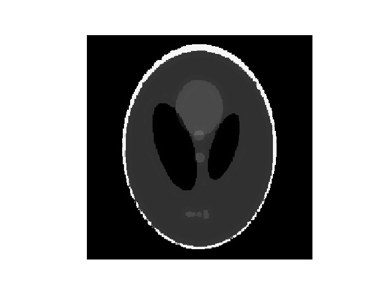
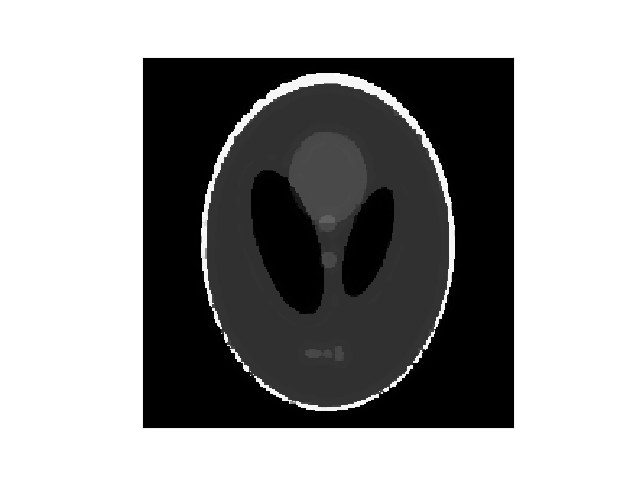

Getting Started
To get familiar with the different aspects of RegularizedLeastSquares.jl, we will go through a simple example from the field of Compressed Sensing.
In Addtion to RegularizedLeastSquares.jl, we will need the packages Images.jl and Random.jl, as well as PyPlot for visualization.
using RegularizedLeastSquares, Images, PyPlot, RandomTo get started, let us generate a simple phantom
N = 256
I = shepp_logan(N)In this example, we consider an operator which randomly samples half of the pixels in the image. Such an operator and the corresponding measurement can be generated by calling
# sampling operator
idx = sort( shuffle( collect(1:N^2) )[1:div(N^2,2)] )
A = SamplingOp(idx,(N,N))
# generate undersampled data
y = A*vec(I)To recover the image, we solve the TV-regularized least squares problem \begin{equation} \underset{\mathbf{x}}{argmin} \frac{1}{2}\vert\vert \mathbf{A}\mathbf{x}-\mathbf{y} \vert\vert_2^2 + λTV(\mathbf{x}) . \end{equation}
For this purpose we build a TV regularizer with regularization parameter $λ=0.01$
reg = Regularization("TV", 0.01; shape=(N,N))To solve the CS problem, the Alternating Direction Method of Multipliers can be used. Thus, we build the corresponding solver
solver = createLinearSolver("admm",A; reg=reg, ρ=0.1, iterations=20)and apply it to our measurement
Ireco = solve(solver,y)
Ireco = reshape(Ireco,N,N)The original phantom and the reconstructed image are shown below
 
